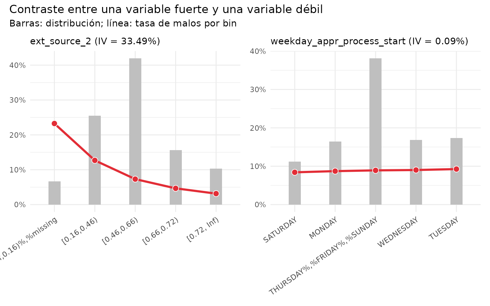
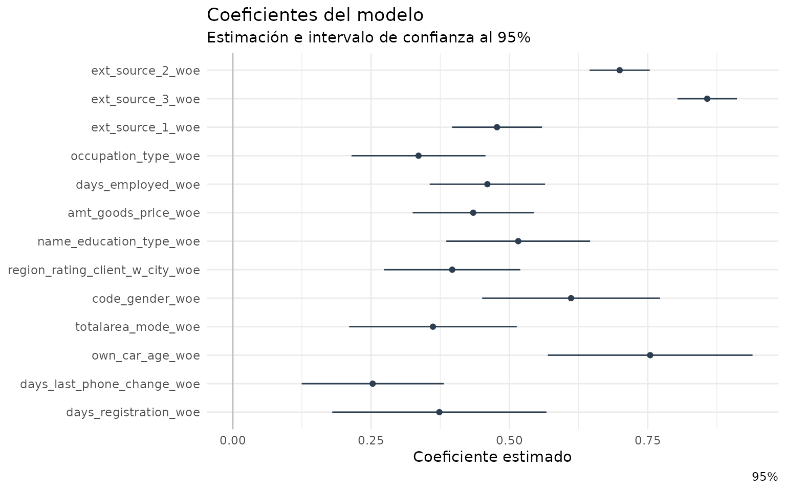
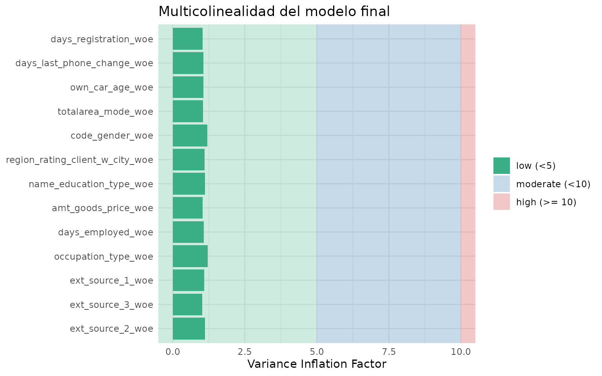
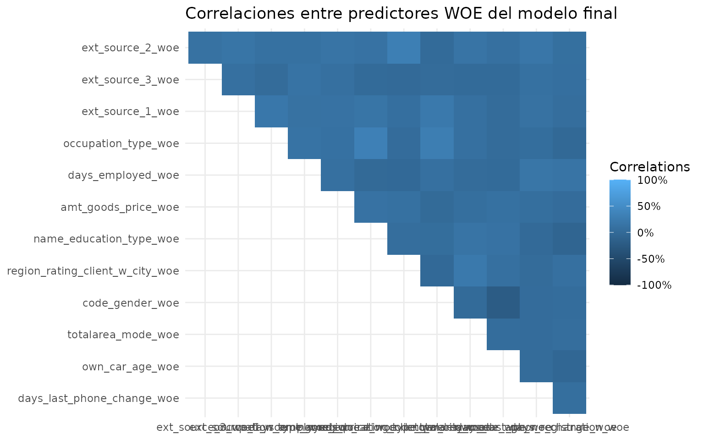
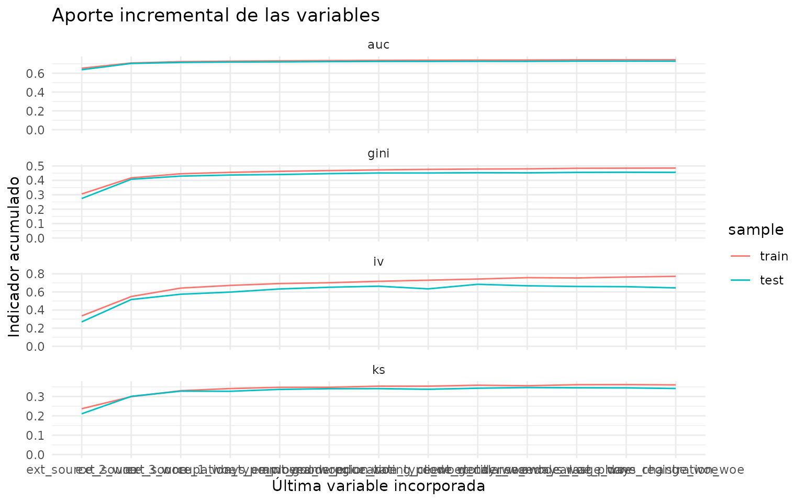
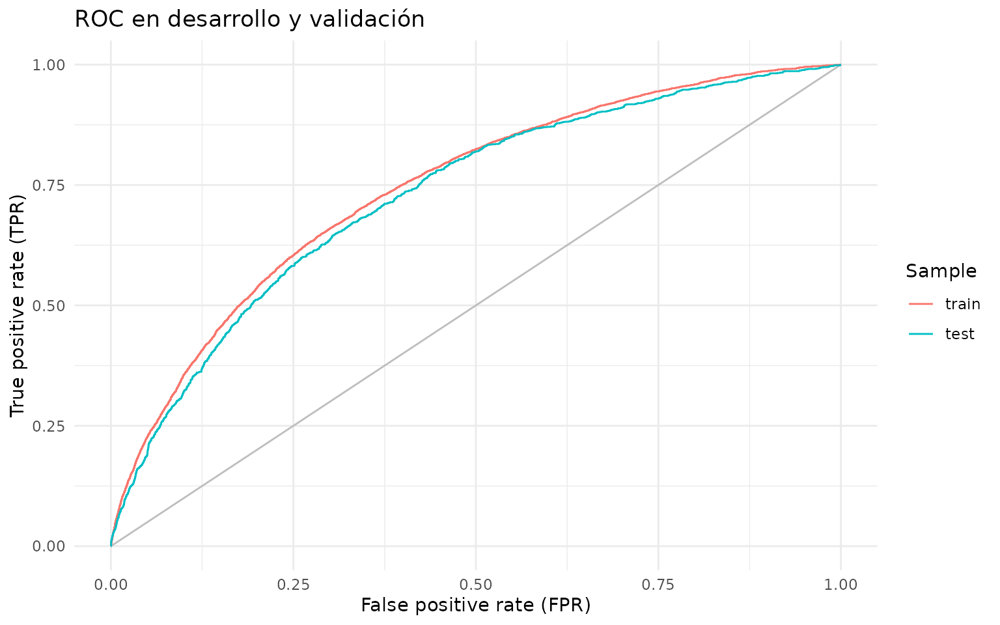
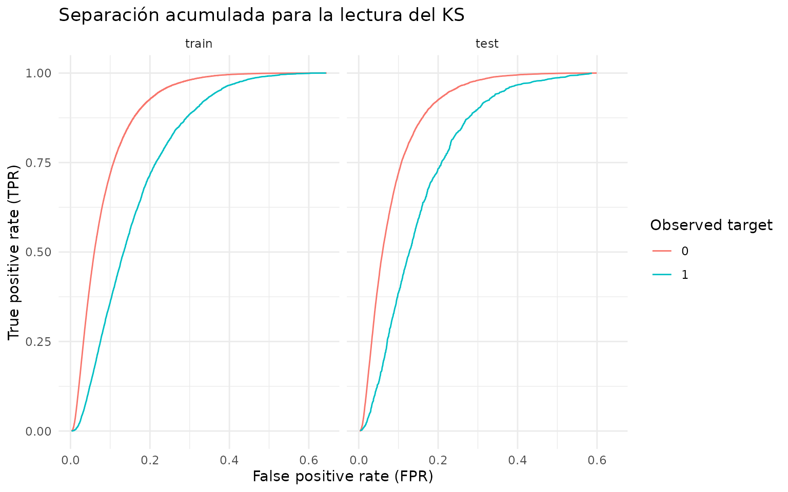
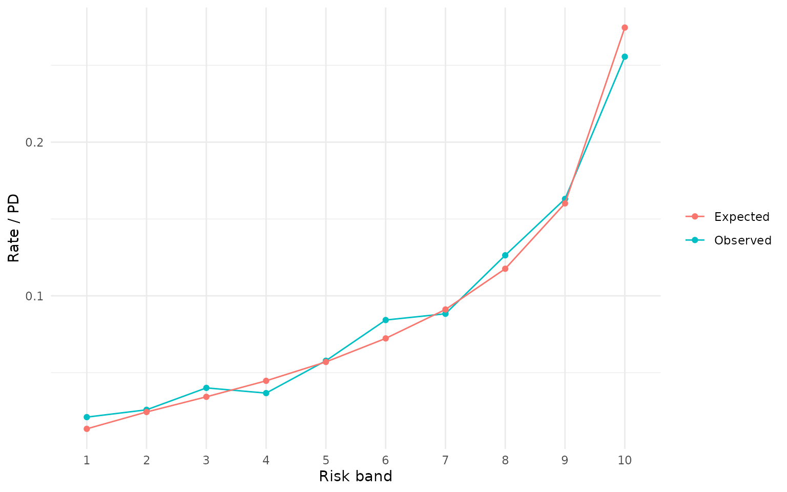
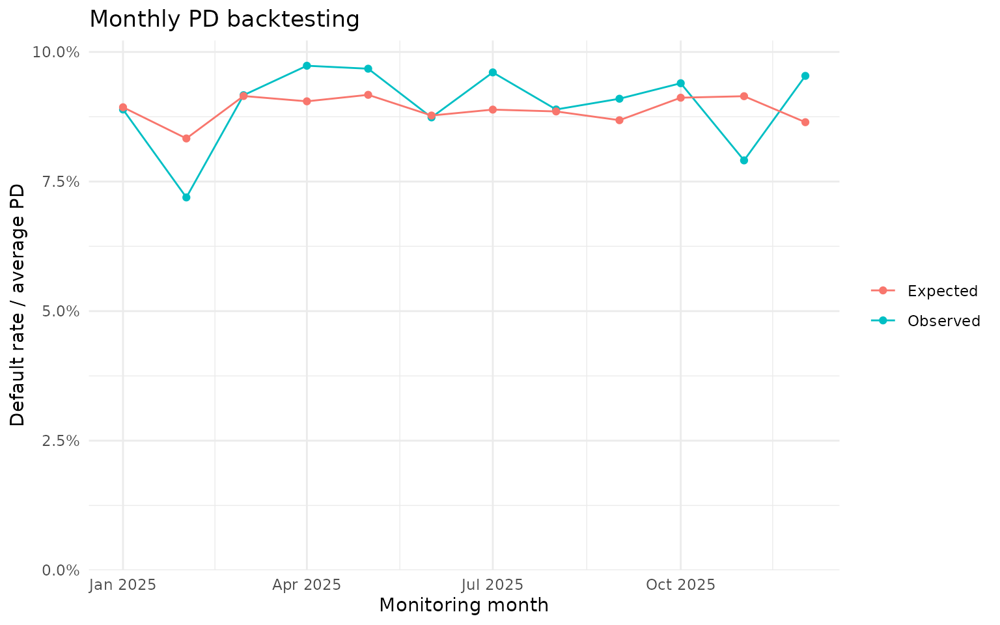

Desarrollo de un scorecard con Home Credit
De la muestra de desarrollo al backtesting de PD
Source:vignettes/home-credit-scorecard.Rmd
home-credit-scorecard.RmdPropósito y alcance
Esta viñeta presenta, de principio a fin, el desarrollo pedagógico de
un scorecard de originación. El modelo estima la probabilidad de
dificultades de pago (target = 1) de una solicitud de
crédito. El resultado se transforma en una PD, un puntaje y una regla de
decisión ilustrativa.
El ejemplo sirve para aprender metodología. No constituye una política de crédito ni un modelo apto para producción. Antes de usar un scorecard en un banco deben revisarse representatividad, sesgo de aprobación, estabilidad, regulación, gobierno y validación independiente.
Mapa del proceso
- Comprender la población y el target.
- Auditar y filtrar observaciones.
- Separar desarrollo y validación.
- Construir bins y transformar a WOE.
- filtrar variables por IV, concentración y monotonicidad.
- Resolver redundancia y correlación.
- Estimar y seleccionar el modelo logístico.
- Evaluar discriminación y calibración.
- Convertir la PD a score, bandas y una decisión ilustrativa.
- Preparar un backtesting de PD observada versus esperada.
Preparación
Los objetos se asignan explícitamente para que cada etapa pueda inspeccionarse, modificarse y enseñarse por separado.
library(risk3r)
library(scorecard)
library(dplyr)
#>
#> Attaching package: 'dplyr'
#> The following objects are masked from 'package:stats':
#>
#> filter, lag
#> The following objects are masked from 'package:base':
#>
#> intersect, setdiff, setequal, union
library(ggplot2)
library(purrr)
library(rsample)
library(tidyr)
#>
#> Attaching package: 'tidyr'
#> The following object is masked from 'package:scorecard':
#>
#> replace_na
theme_set(theme_minimal())
set.seed(2026)
# Use Inf para trabajar con las 307.511 observaciones.
course_sample_n <- 100000
correlation_limit <- 0.70
iv_min <- 0.02
max_variables <- 14L
max_relative_performance_variation <- 0.10
max_income <- 1000000
data("home_credit_application", package = "risk3r")
applications <- home_credit_application
if (is.finite(course_sample_n) && nrow(applications) > course_sample_n) {
applications <- applications |>
group_by(target) |>
slice_sample(prop = course_sample_n / nrow(applications)) |>
ungroup()
}1. Población, unidad de análisis y target
Cada fila representa una solicitud. sk_id_curr
identifica la solicitud y no debe utilizarse como predictor. El evento
target = 1 representa dificultades de pago según la
definición de Home Credit.
En un desarrollo real también se documentan la ventana de observación, la ventana de desempeño, la maduración y las exclusiones. Esta tabla no contiene fechas completas para reconstruir esas ventanas.
target_summary <- applications |>
summarise(
applications = n(),
unique_applications = n_distinct(sk_id_curr),
bads = sum(target == 1, na.rm = TRUE),
bad_rate = mean(target == 1, na.rm = TRUE)
)
target_summary
#> # A tibble: 1 × 4
#> applications unique_applications bads bad_rate
#> <int> <int> <int> <dbl>
#> 1 99999 99999 8072 0.08072. Calidad de datos y filtros de población
apply_filters() aplica exclusiones consecutivas y
conserva una tabla de trazabilidad. Para que el ejemplo modele una
población relativamente homogénea, se define el scorecard para préstamos
de efectivo solicitados por personas con una fuente de ingreso laboral
activa. Después se aplican controles de completitud y alcance
operacional.
Estas reglas son ilustrativas. En un desarrollo bancario deben acordarse antes de mirar su efecto sobre el target y quedar respaldadas por una política. En la base completa, las dos primeras reglas reducen la población de 307.511 a cerca de 226 mil solicitudes y elevan la tasa de malos de aproximadamente 8,1% a 9,0%; por lo tanto, la población resultante es materialmente distinta.
# Umbral pedagógico de alcance operacional. En un desarrollo real debe
# provenir de una política previamente acordada.
population_filters <- list(
`producto prestamos de efectivo` = rlang::quo(name_contract_type == "Cash loans"),
`fuente de ingreso laboral activa` = rlang::quo(name_income_type %in% c("Working", "Commercial associate", "State servant")),
`terminos contractuales completos` = rlang::quo(!is.na(amt_annuity) & !is.na(amt_goods_price)),
`genero informado` = rlang::quo(code_gender != "XNA"),
`ingreso dentro del alcance` = rlang::quo(amt_income_total <= !!max_income)
)
population_summary <- function(data) {
data |>
summarise(
bads = sum(target == 1),
bad_rate = mean(target == 1)
)
}
filtered <- apply_filters(
data = applications,
filters = population_filters,
summary_fun = population_summary
)
#> ℹ Step 1 `initial` ==> TRUE
#> ℹ Step 2 `producto prestamos de efectivo` ==> name_contract_type == "Cash loans"
#> ℹ Step 3 `fuente de ingreso laboral activa` ==> name_income_type %in% ...
#> ℹ Step 4 `terminos contractuales completos` ==> !is.na(amt_annuity) & !is.na(amt_goods_price)
#> ℹ Step 5 `genero informado` ==> code_gender != "XNA"
#> ℹ Step 6 `ingreso dentro del alcance` ==> amt_income_total <= 1e+06
#> ℹ Step 7 `final` ==> TRUE
filter_log <- filtered$summary
model_population <- filtered$data
course_table(
filter_log,
caption = "Trazabilidad de los filtros de población"
)| filter | rows | rows_removed | bads | bad_rate |
|---|---|---|---|---|
| initial | 99999 | NA | 8072 | 0.081 |
| producto prestamos de efectivo | 90575 | 9424 | 7528 | 0.083 |
| fuente de ingreso laboral activa | 73648 | 16927 | 6568 | 0.089 |
| terminos contractuales completos | 73646 | 2 | 6568 | 0.089 |
| genero informado | 73646 | 0 | 6568 | 0.089 |
| ingreso dentro del alcance | 73591 | 55 | 6565 | 0.089 |
| final | 73591 | 0 | 6565 | 0.089 |
En la muestra pedagógica de aproximadamente 50 mil filas se espera que las reglas de producto e ingreso activo retiren alrededor de 4.700 y 8.300 casos, respectivamente. Los controles restantes afectan pocos registros, pero son útiles para demostrar que el log conserva también controles sin pérdidas materiales.
Valores especiales no son necesariamente exclusiones
days_employed = 365243 aparece en más de 55 mil
solicitudes. Aunque parece una antigüedad laboral imposible, en estos
datos funciona como un valor especial asociado principalmente a personas
pensionadas o sin empleo activo. No debe eliminarse silenciosamente como
si fuera un error. Al delimitar antes la población por fuente de
ingreso, se evita mezclar ese segmento con el scorecard laboral; si
permaneciera, debería tratarse explícitamente como categoría especial
durante el binning.
Del mismo modo, los missing de variables predictoras no se eliminan
de manera general. woebin() puede construir un bin de
missing, permitiendo evaluar su riesgo y conservar solicitudes que sí
pertenecen a la población objetivo.
3. Muestras de desarrollo y validación
La separación se hace antes de estimar bins o seleccionar variables.
De este modo, las decisiones del modelador se aprenden solamente con
desarrollo. Se usa rsample, componente de tidymodels, con
estratificación por target.
data_split <- initial_split(
model_population,
prop = 0.80,
strata = target
)
development <- training(data_split)
validation <- testing(data_split)
sample_summary <- bind_rows(
development = development,
validation = validation,
.id = "sample"
) |>
group_by(sample) |>
summarise(
n = n(),
bads = sum(target),
bad_rate = mean(target),
.groups = "drop"
)
course_table(
sample_summary,
caption = "Composición de las muestras de desarrollo y validación"
)| sample | n | bads | bad_rate |
|---|---|---|---|
| development | 58872 | 5242 | 0.089 |
| validation | 14719 | 1323 | 0.090 |
4. Variables candidatas
Se excluyen el identificador y el target. También deben excluirse variables que no estarán disponibles al momento de decidir, variables posteriores al evento y atributos cuyo uso esté restringido.
Antes del binning también se revisa la cardinalidad de las variables
categóricas. organization_type contiene 57 categorías en la
población del ejemplo. Además de producir muchos bins potencialmente
inestables, scorecard::woebin() solicita una confirmación
interactiva para este tipo de columnas, lo que interrumpe el render de
una viñeta. En este primer desarrollo se excluyen automáticamente las
variables con más de 20 categorías. Otra alternativa válida sería
agrupar sus niveles con criterio de negocio.
max_categorical_levels <- 20L
categorical_cardinality <- development |>
select(where(~ is.character(.x) || is.factor(.x))) |>
summarise(across(everything(), n_distinct)) |>
pivot_longer(
cols = everything(),
names_to = "variable",
values_to = "n_levels"
) |>
arrange(desc(n_levels))
high_cardinality_variables <- categorical_cardinality |>
filter(n_levels > max_categorical_levels) |>
pull(variable)
excluded_variables <- c(
"sk_id_curr",
"target",
high_cardinality_variables
)
candidate_variables <- setdiff(
names(development),
excluded_variables
)
development_model <- development |>
select(target, all_of(candidate_variables))
validation_model <- validation |>
select(target, all_of(candidate_variables))
removal_log <- tibble(variable = high_cardinality_variables) |>
mutate(
stage = "categorical cardinality",
reason = paste0(
"more than ",
max_categorical_levels,
" categorical levels"
),
.before = 1
)
course_table(
categorical_cardinality,
caption = "Cardinalidad de las variables categóricas"
)| variable | n_levels |
|---|---|
| organization_type | 57 |
| occupation_type | 19 |
| name_type_suite | 8 |
| wallsmaterial_mode | 8 |
| weekday_appr_process_start | 7 |
| name_housing_type | 6 |
| name_education_type | 5 |
| name_family_status | 5 |
| fondkapremont_mode | 5 |
| housetype_mode | 4 |
| name_income_type | 3 |
| emergencystate_mode | 3 |
| code_gender | 2 |
| flag_own_car | 2 |
| flag_own_realty | 2 |
| name_contract_type | 1 |
5. Binning, WOE e Information Value
Los bins se estiman exclusivamente en desarrollo.
woebin() agrupa valores y calcula WOE e IV. El WOE permite
modelar relaciones no lineales manteniendo una regresión logística
interpretable.
bins_all <- scorecard::woebin(
dt = development_model,
y = "target",
x = candidate_variables,
method = "tree",
no_cores = 1,
print_step = 0
)
#> ℹ Creating woe binning ...
#> Warning in check_const_cols(dt): There were 4 constant columns removed from input dataset,
#> name_contract_type, flag_document_7, flag_document_10, flag_document_12
#> Warning in x_variable(dt, y, x, var_skip, method): Incorrect inputs; there are 4 variables that do not exist in the input data frame, which are removed from x.
#> name_contract_type, flag_document_7, flag_document_10, flag_document_12
#> ✔ Binning on 58872 rows and 116 columns in 00:00:31
bin_summary_all <- risk3r::woebin_summary(bins_all)
bin_summary_table <- bin_summary_all |>
select(
variable, iv, iv_lbl, ks, monotone,
count_distr_min, count_distr_max, has_missing
)
course_table(
bin_summary_table,
caption = "Resumen univariado y bivariado de las variables candidatas",
max_height = "500px"
)| variable | iv | iv_lbl | ks | monotone | count_distr_min | count_distr_max | has_missing |
|---|---|---|---|---|---|---|---|
| ext_source_2 | 0.335 | strong | 0.237 | TRUE | 0.067 | 0.419 | FALSE |
| ext_source_3 | 0.314 | strong | 0.230 | TRUE | 0.082 | 0.283 | TRUE |
| ext_source_1 | 0.161 | medium | 0.136 | TRUE | 0.057 | 0.523 | TRUE |
| days_employed | 0.094 | weak | 0.135 | TRUE | 0.110 | 0.321 | FALSE |
| amt_goods_price | 0.087 | weak | 0.127 | FALSE | 0.060 | 0.482 | FALSE |
| amt_credit | 0.081 | weak | 0.124 | FALSE | 0.052 | 0.351 | FALSE |
| occupation_type | 0.076 | weak | 0.123 | TRUE | 0.118 | 0.395 | TRUE |
| region_rating_client_w_city | 0.068 | weak | 0.073 | TRUE | 0.115 | 0.743 | FALSE |
| name_education_type | 0.067 | weak | 0.105 | TRUE | 0.255 | 0.745 | FALSE |
| region_rating_client | 0.065 | weak | 0.074 | TRUE | 0.108 | 0.736 | FALSE |
| days_last_phone_change | 0.060 | weak | 0.113 | TRUE | 0.085 | 0.569 | FALSE |
| days_birth | 0.059 | weak | 0.110 | TRUE | 0.088 | 0.523 | FALSE |
| region_population_relative | 0.043 | weak | 0.068 | FALSE | 0.072 | 0.411 | FALSE |
| totalarea_mode | 0.043 | weak | 0.092 | FALSE | 0.056 | 0.485 | TRUE |
| floorsmax_avg | 0.042 | weak | 0.091 | TRUE | 0.057 | 0.501 | TRUE |
| floorsmax_medi | 0.041 | weak | 0.091 | TRUE | 0.058 | 0.501 | TRUE |
| elevators_avg | 0.041 | weak | 0.088 | TRUE | 0.054 | 0.536 | TRUE |
| livingarea_avg | 0.041 | weak | 0.090 | TRUE | 0.063 | 0.504 | TRUE |
| livingarea_medi | 0.041 | weak | 0.090 | TRUE | 0.086 | 0.504 | TRUE |
| elevators_medi | 0.041 | weak | 0.088 | TRUE | 0.054 | 0.536 | TRUE |
| floorsmax_mode | 0.040 | weak | 0.090 | TRUE | 0.061 | 0.501 | TRUE |
| elevators_mode | 0.040 | weak | 0.088 | TRUE | 0.050 | 0.536 | TRUE |
| code_gender | 0.039 | weak | 0.098 | TRUE | 0.382 | 0.618 | FALSE |
| livingarea_mode | 0.039 | weak | 0.089 | TRUE | 0.070 | 0.504 | TRUE |
| apartments_medi | 0.037 | weak | 0.088 | TRUE | 0.058 | 0.511 | TRUE |
| years_beginexpluatation_mode | 0.036 | weak | 0.085 | FALSE | 0.061 | 0.490 | TRUE |
| years_beginexpluatation_medi | 0.036 | weak | 0.086 | TRUE | 0.060 | 0.490 | TRUE |
| apartments_avg | 0.036 | weak | 0.088 | TRUE | 0.057 | 0.511 | TRUE |
| years_beginexpluatation_avg | 0.035 | weak | 0.085 | TRUE | 0.052 | 0.490 | TRUE |
| entrances_medi | 0.035 | weak | 0.086 | FALSE | 0.070 | 0.507 | TRUE |
| entrances_avg | 0.035 | weak | 0.086 | FALSE | 0.079 | 0.507 | TRUE |
| apartments_mode | 0.035 | weak | 0.086 | TRUE | 0.061 | 0.511 | TRUE |
| entrances_mode | 0.033 | weak | 0.086 | TRUE | 0.065 | 0.507 | TRUE |
| wallsmaterial_mode | 0.032 | weak | 0.083 | TRUE | 0.052 | 0.511 | TRUE |
| own_car_age | 0.031 | weak | 0.066 | FALSE | 0.065 | 0.624 | TRUE |
| nonlivingarea_medi | 0.031 | weak | 0.082 | FALSE | 0.051 | 0.555 | TRUE |
| nonlivingarea_mode | 0.031 | weak | 0.082 | FALSE | 0.052 | 0.555 | TRUE |
| amt_annuity | 0.031 | weak | 0.070 | FALSE | 0.062 | 0.435 | FALSE |
| nonlivingarea_avg | 0.031 | weak | 0.082 | FALSE | 0.057 | 0.555 | TRUE |
| reg_city_not_work_city | 0.029 | weak | 0.078 | TRUE | 0.282 | 0.718 | FALSE |
| emergencystate_mode | 0.029 | weak | 0.084 | TRUE | 0.476 | 0.524 | TRUE |
| housetype_mode | 0.027 | weak | 0.082 | TRUE | 0.495 | 0.505 | TRUE |
| basementarea_medi | 0.027 | weak | 0.074 | FALSE | 0.076 | 0.588 | TRUE |
| basementarea_avg | 0.027 | weak | 0.074 | TRUE | 0.077 | 0.588 | TRUE |
| basementarea_mode | 0.026 | weak | 0.074 | FALSE | 0.071 | 0.588 | TRUE |
| landarea_mode | 0.026 | weak | 0.070 | FALSE | 0.073 | 0.597 | TRUE |
| days_registration | 0.025 | weak | 0.067 | TRUE | 0.065 | 0.483 | FALSE |
| landarea_medi | 0.025 | weak | 0.070 | FALSE | 0.052 | 0.597 | TRUE |
| landarea_avg | 0.024 | weak | 0.070 | FALSE | 0.055 | 0.597 | TRUE |
| name_income_type | 0.023 | weak | 0.068 | TRUE | 0.087 | 0.632 | FALSE |
| years_build_mode | 0.022 | weak | 0.060 | FALSE | 0.058 | 0.667 | TRUE |
| name_family_status | 0.021 | weak | 0.065 | TRUE | 0.091 | 0.658 | FALSE |
| amt_income_total | 0.021 | weak | 0.056 | TRUE | 0.057 | 0.683 | FALSE |
| floorsmin_avg | 0.021 | weak | 0.057 | TRUE | 0.081 | 0.680 | TRUE |
| floorsmin_medi | 0.021 | weak | 0.057 | TRUE | 0.082 | 0.680 | TRUE |
| years_build_medi | 0.021 | weak | 0.060 | FALSE | 0.059 | 0.667 | TRUE |
| years_build_avg | 0.021 | weak | 0.060 | FALSE | 0.059 | 0.667 | TRUE |
| amt_req_credit_bureau_year | 0.021 | weak | 0.052 | FALSE | 0.082 | 0.346 | TRUE |
| amt_req_credit_bureau_qrt | 0.021 | weak | 0.049 | FALSE | 0.054 | 0.699 | TRUE |
| floorsmin_mode | 0.020 | unpredictive | 0.057 | TRUE | 0.095 | 0.680 | TRUE |
| amt_req_credit_bureau_mon | 0.020 | unpredictive | 0.049 | TRUE | 0.134 | 0.715 | TRUE |
| reg_city_not_live_city | 0.019 | unpredictive | 0.043 | TRUE | 0.089 | 0.911 | FALSE |
| amt_req_credit_bureau_day | 0.019 | unpredictive | 0.049 | TRUE | 0.134 | 0.866 | TRUE |
| amt_req_credit_bureau_hour | 0.019 | unpredictive | 0.049 | TRUE | 0.134 | 0.866 | TRUE |
| amt_req_credit_bureau_week | 0.019 | unpredictive | 0.049 | TRUE | 0.134 | 0.866 | TRUE |
| livingapartments_avg | 0.018 | unpredictive | 0.053 | TRUE | 0.053 | 0.685 | TRUE |
| livingapartments_medi | 0.018 | unpredictive | 0.053 | TRUE | 0.051 | 0.685 | TRUE |
| livingapartments_mode | 0.017 | unpredictive | 0.053 | FALSE | 0.059 | 0.685 | TRUE |
| days_id_publish | 0.017 | unpredictive | 0.055 | TRUE | 0.179 | 0.300 | FALSE |
| fondkapremont_mode | 0.016 | unpredictive | 0.057 | TRUE | 0.077 | 0.685 | TRUE |
| flag_own_car | 0.016 | unpredictive | 0.060 | TRUE | 0.376 | 0.624 | FALSE |
| hour_appr_process_start | 0.015 | unpredictive | 0.046 | FALSE | 0.070 | 0.533 | FALSE |
| def_30_cnt_social_circle | 0.015 | unpredictive | 0.041 | TRUE | 0.114 | 0.886 | FALSE |
| commonarea_avg | 0.015 | unpredictive | 0.051 | TRUE | 0.050 | 0.700 | TRUE |
| nonlivingapartments_avg | 0.014 | unpredictive | 0.050 | FALSE | 0.052 | 0.695 | TRUE |
| commonarea_medi | 0.014 | unpredictive | 0.051 | TRUE | 0.050 | 0.700 | TRUE |
| commonarea_mode | 0.014 | unpredictive | 0.051 | FALSE | 0.054 | 0.700 | TRUE |
| nonlivingapartments_medi | 0.014 | unpredictive | 0.050 | FALSE | 0.051 | 0.695 | TRUE |
| nonlivingapartments_mode | 0.013 | unpredictive | 0.050 | TRUE | 0.113 | 0.695 | TRUE |
| live_city_not_work_city | 0.013 | unpredictive | 0.048 | TRUE | 0.221 | 0.779 | FALSE |
| def_60_cnt_social_circle | 0.012 | unpredictive | 0.033 | TRUE | 0.084 | 0.916 | FALSE |
| name_housing_type | 0.011 | unpredictive | 0.029 | TRUE | 0.074 | 0.926 | FALSE |
| flag_document_3 | 0.008 | unpredictive | 0.032 | TRUE | 0.156 | 0.844 | FALSE |
| flag_phone | 0.006 | unpredictive | 0.034 | TRUE | 0.281 | 0.719 | FALSE |
| obs_60_cnt_social_circle | 0.006 | unpredictive | 0.026 | FALSE | 0.065 | 0.533 | FALSE |
| obs_30_cnt_social_circle | 0.006 | unpredictive | 0.026 | FALSE | 0.066 | 0.531 | FALSE |
| flag_document_8 | 0.005 | unpredictive | 0.021 | TRUE | 0.108 | 0.892 | FALSE |
| flag_work_phone | 0.004 | unpredictive | 0.029 | TRUE | 0.251 | 0.749 | FALSE |
| cnt_fam_members | 0.003 | unpredictive | 0.024 | FALSE | 0.113 | 0.498 | FALSE |
| name_type_suite | 0.003 | unpredictive | 0.017 | TRUE | 0.140 | 0.860 | FALSE |
| weekday_appr_process_start | 0.001 | unpredictive | 0.011 | TRUE | 0.112 | 0.381 | FALSE |
| flag_email | 0.001 | unpredictive | 0.006 | TRUE | 0.064 | 0.936 | FALSE |
| cnt_children | 0.000 | unpredictive | 0.008 | FALSE | 0.121 | 0.649 | FALSE |
| reg_region_not_work_region | 0.000 | unpredictive | 0.003 | TRUE | 0.063 | 0.937 | FALSE |
| flag_own_realty | 0.000 | unpredictive | 0.001 | TRUE | 0.337 | 0.663 | FALSE |
| live_region_not_work_region | 0.000 | unpredictive | 0.000 | TRUE | 0.051 | 0.949 | FALSE |
| flag_cont_mobile | 0.000 | unpredictive | 0.000 | TRUE | 1.000 | 1.000 | FALSE |
| flag_document_11 | 0.000 | unpredictive | 0.000 | TRUE | 1.000 | 1.000 | FALSE |
| flag_document_13 | 0.000 | unpredictive | 0.000 | TRUE | 1.000 | 1.000 | FALSE |
| flag_document_14 | 0.000 | unpredictive | 0.000 | TRUE | 1.000 | 1.000 | FALSE |
| flag_document_15 | 0.000 | unpredictive | 0.000 | TRUE | 1.000 | 1.000 | FALSE |
| flag_document_16 | 0.000 | unpredictive | 0.000 | TRUE | 1.000 | 1.000 | FALSE |
| flag_document_17 | 0.000 | unpredictive | 0.000 | TRUE | 1.000 | 1.000 | FALSE |
| flag_document_18 | 0.000 | unpredictive | 0.000 | TRUE | 1.000 | 1.000 | FALSE |
| flag_document_19 | 0.000 | unpredictive | 0.000 | TRUE | 1.000 | 1.000 | FALSE |
| flag_document_2 | 0.000 | unpredictive | 0.000 | TRUE | 1.000 | 1.000 | FALSE |
| flag_document_20 | 0.000 | unpredictive | 0.000 | TRUE | 1.000 | 1.000 | FALSE |
| flag_document_21 | 0.000 | unpredictive | 0.000 | TRUE | 1.000 | 1.000 | FALSE |
| flag_document_4 | 0.000 | unpredictive | 0.000 | TRUE | 1.000 | 1.000 | FALSE |
| flag_document_5 | 0.000 | unpredictive | 0.000 | TRUE | 1.000 | 1.000 | FALSE |
| flag_document_6 | 0.000 | unpredictive | 0.000 | TRUE | 1.000 | 1.000 | FALSE |
| flag_document_9 | 0.000 | unpredictive | 0.000 | TRUE | 1.000 | 1.000 | FALSE |
| flag_emp_phone | 0.000 | unpredictive | 0.000 | TRUE | 1.000 | 1.000 | FALSE |
| flag_mobil | 0.000 | unpredictive | 0.000 | TRUE | 1.000 | 1.000 | FALSE |
| reg_region_not_live_region | 0.000 | unpredictive | 0.000 | TRUE | 1.000 | 1.000 | FALSE |
Comparación visual de una variable fuerte y una débil
Para que la comparación sea informativa, se consideran solamente variables con al menos cuatro bins. Dentro de ese conjunto se seleccionan la de mayor y la de menor IV. La primera permite observar una separación más marcada de la tasa de malos entre tramos; la segunda muestra que tener varios bins no garantiza poder predictivo.
Las barras representan la distribución de observaciones y la línea
muestra la tasa de malos (posprob) de cada bin. Esta
comparación ayuda a interpretar el IV, pero no reemplaza la revisión de
tamaño, estabilidad, monotonicidad y sentido de negocio.
minimum_bins_for_comparison <- 4L
iv_comparison_candidates <- bin_summary_all |>
filter(
n_categories >= minimum_bins_for_comparison,
is.finite(iv)
)
iv_extremes <- bind_rows(
`Strong variable` = iv_comparison_candidates |>
slice_max(iv, n = 1, with_ties = FALSE),
`Weak variable` = iv_comparison_candidates |>
slice_min(iv, n = 1, with_ties = FALSE),
.id = "example"
)
course_table(
iv_extremes |>
select(example, variable, n_categories, iv, ks, monotone),
caption = paste0(
"Variables con mayor y menor IV entre aquellas con al menos ",
minimum_bins_for_comparison,
" bins"
)
)| example | variable | n_categories | iv | ks | monotone |
|---|---|---|---|---|---|
| Strong variable | ext_source_2 | 5 | 0.335 | 0.237 | TRUE |
| Weak variable | weekday_appr_process_start | 5 | 0.001 | 0.011 | TRUE |
iv_extreme_variables <- iv_extremes |>
pull(variable)
iv_extreme_plots <- risk3r::gg_woes(
bins_all[iv_extreme_variables],
variable = "posprob"
)
#> ext_source_2 (IV = 33.49%)
#> weekday_appr_process_start (IV = 0.09%)
iv_comparison_plot <- patchwork::wrap_plots(
iv_extreme_plots,
ncol = 2
) +
patchwork::plot_annotation(
title = "Contraste entre una variable fuerte y una variable débil",
subtitle = "Barras: distribución; línea: tasa de malos por bin"
)
iv_comparison_plot <- iv_comparison_plot &
theme(axis.text.x = element_text(angle = 35, hjust = 1))
iv_comparison_plot
Filtros de variables
El IV no debe ser el único criterio. También se revisan concentración, bins pequeños, missing, disponibilidad futura, estabilidad y sentido de negocio.
variable_decisions <- bin_summary_all |>
mutate(
remove_low_iv = iv < iv_min,
remove_concentration = count_distr_max > 0.95,
review_small_bin = count_distr_min < 0.02,
review_monotonicity = !monotone,
keep_automatic = !remove_low_iv & !remove_concentration
)
variables_after_iv <- variable_decisions |>
filter(keep_automatic) |>
pull(variable)
removal_log <- bind_rows(
removal_log,
variable_decisions |>
filter(!keep_automatic) |>
transmute(
stage = "univariate and bivariate filters",
variable,
reason = case_when(
remove_low_iv ~ "IV below threshold",
remove_concentration ~ "excessive concentration",
TRUE ~ "manual review"
)
)
)
bins_iv <- bins_all[variables_after_iv]Revisión de monotonicidad
La monotonicidad ayuda a obtener relaciones ordenadas y defendibles,
pero no debe imponerse automáticamente a todas las variables. Primero se
identifican los casos que requieren revisión; después se pueden
proporcionar cortes manuales mediante breaks_list y volver
a ejecutar woebin().
variables_to_review <- variable_decisions |>
filter(keep_automatic, review_monotonicity) |>
select(variable, iv, ks, monotone, breaks)
course_table(
variables_to_review |>
select(-breaks),
caption = "Variables que requieren revisión de monotonicidad"
)| variable | iv | ks | monotone |
|---|---|---|---|
| amt_goods_price | 0.087 | 0.127 | FALSE |
| amt_credit | 0.081 | 0.124 | FALSE |
| region_population_relative | 0.043 | 0.068 | FALSE |
| totalarea_mode | 0.043 | 0.092 | FALSE |
| years_beginexpluatation_mode | 0.036 | 0.085 | FALSE |
| entrances_medi | 0.035 | 0.086 | FALSE |
| entrances_avg | 0.035 | 0.086 | FALSE |
| own_car_age | 0.031 | 0.066 | FALSE |
| nonlivingarea_medi | 0.031 | 0.082 | FALSE |
| nonlivingarea_mode | 0.031 | 0.082 | FALSE |
| amt_annuity | 0.031 | 0.070 | FALSE |
| nonlivingarea_avg | 0.031 | 0.082 | FALSE |
| basementarea_medi | 0.027 | 0.074 | FALSE |
| basementarea_mode | 0.026 | 0.074 | FALSE |
| landarea_mode | 0.026 | 0.070 | FALSE |
| landarea_medi | 0.025 | 0.070 | FALSE |
| landarea_avg | 0.024 | 0.070 | FALSE |
| years_build_mode | 0.022 | 0.060 | FALSE |
| years_build_medi | 0.021 | 0.060 | FALSE |
| years_build_avg | 0.021 | 0.060 | FALSE |
| amt_req_credit_bureau_year | 0.021 | 0.052 | FALSE |
| amt_req_credit_bureau_qrt | 0.021 | 0.049 | FALSE |
# Ejemplo de intervención experta:
# manual_breaks <- list(amt_credit = c(250000, 500000, 750000))
# bins_iv <- scorecard::woebin(
# development_model,
# y = "target",
# x = variables_after_iv,
# breaks_list = manual_breaks
# )6. Redundancia y correlación
La correlación se calcula sobre las variables transformadas a WOE.
Cuando dos variables exceden el umbral, woebin_cor_iv()
ordena las variables usando su IV; en este ejemplo se conserva la de
mayor prioridad y se elimina la segunda.
correlation_table <- risk3r::woebin_cor_iv(
dt = development_model |>
select(target, all_of(variables_after_iv)),
bins = bins_iv,
plot = FALSE
) |>
filter(var1 != var2, var1_rank < var2_rank) |>
mutate(correlation_conflict = abs(r) >= correlation_limit)
#> ℹ Converting into woe values ...
#> ✔ Woe transformating on 58872 rows and 59 columns in 00:00:02
#> Correlation computed with
#> • Method: 'pearson'
#> • Missing treated using: 'pairwise.complete.obs'
variables_removed_correlation <- correlation_table |>
filter(correlation_conflict) |>
pull(var2) |>
unique()
variables_model <- setdiff(
variables_after_iv,
variables_removed_correlation
)
bins_model <- bins_iv[variables_model]
removal_log <- bind_rows(
removal_log,
tibble(
stage = "correlation",
variable = variables_removed_correlation,
reason = paste0("absolute WOE correlation >= ", correlation_limit)
)
)7. Transformación WOE
Los mismos bins aprendidos en desarrollo se aplican a validación. No se deben reestimar cortes ni WOE usando la muestra de validación.
development_woe <- scorecard::woebin_ply(
development_model |>
select(target, all_of(variables_model)),
bins = bins_model,
no_cores = 1,
print_step = 0
) |>
tibble::as_tibble()
#> ℹ Converting into woe values ...
#> ✔ Woe transformating on 58872 rows and 21 columns in 00:00:00
validation_woe <- scorecard::woebin_ply(
validation_model |>
select(target, all_of(variables_model)),
bins = bins_model,
no_cores = 1,
print_step = 0
) |>
tibble::as_tibble()
#> ℹ Converting into woe values ...
#> ✔ Woe transformating on 14719 rows and 21 columns in 00:00:008. Regresión logística y selección de variables
Se estima un modelo completo y luego se usa elastic net como apoyo a la selección. La selección automática no reemplaza la revisión de signos, significancia, estabilidad e interpretación.
model_full <- glm(
target ~ .,
data = development_woe,
family = binomial(link = "logit")
)
model_selected <- risk3r::featsel_glmnet(
model_full,
S = "lambda.1se",
plot = FALSE,
trace.it = 0
)
if (length(coef(model_selected)) - 1L > max_variables) {
model_selected <- risk3r::featsel_stepforward(
model_selected,
trace = 0,
steps = max_variables
)
}
coefficient_table <- broom::tidy(
model_selected,
conf.int = TRUE
)
course_table(
coefficient_table,
caption = "Coeficientes e intervalos de confianza del modelo seleccionado"
)| term | estimate | std.error | statistic | p.value | conf.low | conf.high |
|---|---|---|---|---|---|---|
| (Intercept) | -2.331 | 0.016 | -145.688 | 0 | -2.362 | -2.299 |
| ext_source_2_woe | 0.699 | 0.028 | 25.223 | 0 | 0.645 | 0.754 |
| ext_source_3_woe | 0.857 | 0.027 | 31.307 | 0 | 0.804 | 0.911 |
| ext_source_1_woe | 0.478 | 0.042 | 11.505 | 0 | 0.396 | 0.559 |
| occupation_type_woe | 0.336 | 0.062 | 5.437 | 0 | 0.215 | 0.457 |
| days_employed_woe | 0.460 | 0.053 | 8.650 | 0 | 0.356 | 0.565 |
| amt_goods_price_woe | 0.435 | 0.056 | 7.788 | 0 | 0.326 | 0.544 |
| name_education_type_woe | 0.516 | 0.066 | 7.780 | 0 | 0.387 | 0.647 |
| region_rating_client_w_city_woe | 0.397 | 0.063 | 6.321 | 0 | 0.274 | 0.520 |
| code_gender_woe | 0.611 | 0.082 | 7.457 | 0 | 0.451 | 0.772 |
| totalarea_mode_woe | 0.362 | 0.077 | 4.681 | 0 | 0.211 | 0.514 |
| own_car_age_woe | 0.754 | 0.094 | 7.993 | 0 | 0.571 | 0.941 |
| days_last_phone_change_woe | 0.253 | 0.065 | 3.863 | 0 | 0.125 | 0.382 |
| days_registration_woe | 0.373 | 0.099 | 3.780 | 0 | 0.180 | 0.568 |
Signos, significancia y multicolinealidad
Con la convención WOE utilizada debe verificarse el signo esperado. Un signo inesperado puede revelar colinealidad, bins inestables, fuga de información o una relación distinta de la esperada; no se elimina sin investigar.
variables_selected_woe <- coefficient_table |>
filter(term != "(Intercept)") |>
pull(term)
significance_review <- coefficient_table |>
filter(term != "(Intercept)") |>
mutate(
significant_5pct = p.value < 0.05,
expected_positive_sign = estimate > 0
)
vif_review <- risk3r::model_vif_variables(model_selected)
coefficient_plot <- risk3r::gg_model_coef(
model_selected,
level = 0.95,
color = "#2C3E50"
) +
labs(
x = "Coeficiente estimado",
y = NULL,
title = "Coeficientes del modelo",
subtitle = "Estimación e intervalo de confianza al 95%"
)
coefficient_plot
vif_plot <- risk3r::gg_model_vif(model_selected) +
coord_flip() +
labs(
x = NULL,
y = "Variance Inflation Factor",
title = "Multicolinealidad del modelo final"
)
correlation_plot <- risk3r::gg_model_corr(
model_selected,
upper = TRUE
) +
labs(
x = NULL,
y = NULL,
title = "Correlaciones entre predictores WOE del modelo final"
)
#> Correlation computed with
#> • Method: 'pearson'
#> • Missing treated using: 'pairwise.complete.obs'
vif_plot
correlation_plot
course_table(
significance_review,
caption = "Revisión tabular de signos y significancia"
)| term | estimate | std.error | statistic | p.value | conf.low | conf.high | significant_5pct | expected_positive_sign |
|---|---|---|---|---|---|---|---|---|
| ext_source_2_woe | 0.699 | 0.028 | 25.223 | 0 | 0.645 | 0.754 | TRUE | TRUE |
| ext_source_3_woe | 0.857 | 0.027 | 31.307 | 0 | 0.804 | 0.911 | TRUE | TRUE |
| ext_source_1_woe | 0.478 | 0.042 | 11.505 | 0 | 0.396 | 0.559 | TRUE | TRUE |
| occupation_type_woe | 0.336 | 0.062 | 5.437 | 0 | 0.215 | 0.457 | TRUE | TRUE |
| days_employed_woe | 0.460 | 0.053 | 8.650 | 0 | 0.356 | 0.565 | TRUE | TRUE |
| amt_goods_price_woe | 0.435 | 0.056 | 7.788 | 0 | 0.326 | 0.544 | TRUE | TRUE |
| name_education_type_woe | 0.516 | 0.066 | 7.780 | 0 | 0.387 | 0.647 | TRUE | TRUE |
| region_rating_client_w_city_woe | 0.397 | 0.063 | 6.321 | 0 | 0.274 | 0.520 | TRUE | TRUE |
| code_gender_woe | 0.611 | 0.082 | 7.457 | 0 | 0.451 | 0.772 | TRUE | TRUE |
| totalarea_mode_woe | 0.362 | 0.077 | 4.681 | 0 | 0.211 | 0.514 | TRUE | TRUE |
| own_car_age_woe | 0.754 | 0.094 | 7.993 | 0 | 0.571 | 0.941 | TRUE | TRUE |
| days_last_phone_change_woe | 0.253 | 0.065 | 3.863 | 0 | 0.125 | 0.382 | TRUE | TRUE |
| days_registration_woe | 0.373 | 0.099 | 3.780 | 0 | 0.180 | 0.568 | TRUE | TRUE |
course_table(
vif_review,
caption = "Diagnóstico de multicolinealidad"
)| term | vif | vif_label |
|---|---|---|
| ext_source_2_woe | 1.119 | low (<5) |
| ext_source_3_woe | 1.025 | low (<5) |
| ext_source_1_woe | 1.096 | low (<5) |
| occupation_type_woe | 1.209 | low (<5) |
| days_employed_woe | 1.081 | low (<5) |
| amt_goods_price_woe | 1.036 | low (<5) |
| name_education_type_woe | 1.117 | low (<5) |
| region_rating_client_w_city_woe | 1.101 | low (<5) |
| code_gender_woe | 1.192 | low (<5) |
| totalarea_mode_woe | 1.053 | low (<5) |
| own_car_age_woe | 1.064 | low (<5) |
| days_last_phone_change_woe | 1.066 | low (<5) |
| days_registration_woe | 1.037 | low (<5) |
Aporte incremental de las variables
gg_model_partials() vuelve a estimar modelos
incorporando las variables en el orden del modelo y muestra cómo
evolucionan KS, AUC, IV y Gini en desarrollo y validación. Es útil para
detectar variables que agregan poco poder discriminante o cuyo aporte no
se sostiene fuera de muestra. No debe usarse como una regla automática
de eliminación, porque el resultado depende del orden de entrada y de la
correlación entre predictores.
partial_performance_plot <- risk3r::gg_model_partials(
model_selected,
newdata = validation_woe,
verbose = FALSE
) +
labs(
x = "Última variable incorporada",
y = "Indicador acumulado",
title = "Aporte incremental de las variables"
)
#> ℹ Creating woe binning ...
#> ℹ Creating woe binning ...
#> ℹ Creating woe binning ...
#> ℹ Creating woe binning ...
#> ℹ Creating woe binning ...
#> ℹ Creating woe binning ...
#> ℹ Creating woe binning ...
#> ℹ Creating woe binning ...
#> ℹ Creating woe binning ...
#> ℹ Creating woe binning ...
#> ℹ Creating woe binning ...
#> ℹ Creating woe binning ...
#> ℹ Creating woe binning ...
#> ℹ Creating woe binning ...
#> ℹ Creating woe binning ...
#> ℹ Creating woe binning ...
#> ℹ Creating woe binning ...
#> ℹ Creating woe binning ...
#> ℹ Creating woe binning ...
#> ℹ Creating woe binning ...
#> ℹ Creating woe binning ...
#> ℹ Creating woe binning ...
#> ℹ Creating woe binning ...
#> ℹ Creating woe binning ...
#> ℹ Creating woe binning ...
#> ℹ Creating woe binning ...
partial_performance_plot
9. Discriminación en desarrollo y validación
KS, AUC y Gini miden separación, no calibración. Deben reportarse fuera de la muestra usada para estimar el modelo.
development_pd <- predict(
model_selected,
newdata = development_woe,
type = "response"
)
validation_pd <- predict(
model_selected,
newdata = validation_woe,
type = "response"
)
performance <- bind_rows(
development = risk3r::model_metrics(model_selected),
validation = risk3r::model_metrics(model_selected, validation_woe),
.id = "sample"
)
#> ℹ Creating woe binning ...
#> ℹ Creating woe binning ...
performance_comparison <- performance |>
select(sample, ks, auc, gini) |>
pivot_longer(
cols = -sample,
names_to = "metric",
values_to = "value"
) |>
pivot_wider(
names_from = sample,
values_from = value
) |>
mutate(
relative_variation = validation / development - 1,
absolute_relative_variation = abs(relative_variation),
status = if_else(
absolute_relative_variation <= max_relative_performance_variation,
"Within illustrative tolerance",
"Methodological review required"
)
)
validation_gains <- risk3r::gain(
actual = validation_woe$target,
predicted = validation_pd
)
course_table(
performance,
caption = "Indicadores de discriminación por muestra"
)| sample | ks | auc | iv | gini |
|---|---|---|---|---|
| development | 0.360 | 0.743 | 0.772 | 0.486 |
| validation | 0.342 | 0.728 | 0.644 | 0.456 |
course_table(
performance_comparison |>
mutate(
relative_variation = scales::percent(relative_variation),
absolute_relative_variation = scales::percent(
absolute_relative_variation
)
),
caption = paste0(
"Variación relativa entre desarrollo y validación; tolerancia ilustrativa: ",
scales::percent(max_relative_performance_variation)
)
)| metric | development | validation | relative_variation | absolute_relative_variation | status |
|---|---|---|---|---|---|
| ks | 0.360 | 0.342 | -5.17% | 5.17% | Within illustrative tolerance |
| auc | 0.743 | 0.728 | -2.00% | 2.00% | Within illustrative tolerance |
| gini | 0.486 | 0.456 | -6.13% | 6.13% | Within illustrative tolerance |
gain_table <- tibble(
population_fraction = c(0.10, 0.20, 0.30, 0.40, 0.50),
gain = as.numeric(validation_gains)
)
course_table(
gain_table,
caption = "Gains acumulados en validación"
)| population_fraction | gain |
|---|---|
| 0.1 | 0.108 |
| 0.2 | 0.215 |
| 0.3 | 0.320 |
| 0.4 | 0.426 |
| 0.5 | 0.529 |
roc_plot <- risk3r::gg_model_roc(
model_selected,
newdata = validation_woe
) +
labs(
color = "Sample",
title = "ROC en desarrollo y validación"
)
ks_plot <- risk3r::gg_model_ecdf(
model_selected,
newdata = validation_woe
) +
labs(
color = "Observed target",
title = "Separación acumulada para la lectura del KS"
)
roc_plot
ks_plot
Gobierno y tolerancias metodológicas
La tolerancia de 10% utilizada arriba es solamente ilustrativa. En una institución financiera, el área de riesgo de modelos suele mantener políticas, manuales metodológicos y estándares de validación que establecen qué debe cumplir un modelo: diferencias máximas entre desarrollo y validación, KS o AUC mínimos, estabilidad temporal, VIF aceptable, calibración, documentación, validación independiente y reglas para excepciones. Una diferencia elevada no implica por sí sola rechazar el modelo, pero sí exige investigar overfitting, fuga de información, cambios de población o falta de representatividad.
10. Calibración de la PD
Una PD está calibrada cuando las tasas observadas se parecen a las probabilidades pronosticadas. Se compara la tasa de malos con la PD promedio, primero globalmente y luego por bandas de riesgo.
validation_scored <- validation |>
transmute(
sk_id_curr,
target,
pd = validation_pd
) |>
mutate(
risk_band = ntile(pd, 10L),
risk_band = factor(risk_band, levels = 1:10)
)
calibration_overall <- validation_scored |>
summarise(
n = n(),
observed_bad_rate = mean(target),
expected_pd = mean(pd),
observed_expected_ratio = observed_bad_rate / expected_pd
)
calibration_bands <- validation_scored |>
group_by(risk_band) |>
summarise(
n = n(),
observed_bad_rate = mean(target),
expected_pd = mean(pd),
.groups = "drop"
)
course_table(
calibration_overall,
caption = "Calibración global en validación"
)| n | observed_bad_rate | expected_pd | observed_expected_ratio |
|---|---|---|---|
| 14719 | 0.09 | 0.089 | 1.011 |
course_table(
calibration_bands,
caption = "PD esperada y tasa observada por banda de riesgo"
)| risk_band | n | observed_bad_rate | expected_pd |
|---|---|---|---|
| 1 | 1472 | 0.021 | 0.013 |
| 2 | 1472 | 0.026 | 0.024 |
| 3 | 1472 | 0.040 | 0.034 |
| 4 | 1472 | 0.037 | 0.045 |
| 5 | 1472 | 0.058 | 0.057 |
| 6 | 1472 | 0.084 | 0.072 |
| 7 | 1472 | 0.088 | 0.091 |
| 8 | 1472 | 0.126 | 0.118 |
| 9 | 1472 | 0.163 | 0.160 |
| 10 | 1471 | 0.256 | 0.275 |
ggplot(
calibration_bands,
aes(x = risk_band, group = 1)
) +
geom_line(aes(y = observed_bad_rate, color = "Observed")) +
geom_point(aes(y = observed_bad_rate, color = "Observed")) +
geom_line(aes(y = expected_pd, color = "Expected")) +
geom_point(aes(y = expected_pd, color = "Expected")) +
labs(x = "Risk band", y = "Rate / PD", color = NULL)
Recalibración de intercepto y pendiente
El glm() estima el intercepto para la muestra de
desarrollo. Si la tasa base de una cartera futura cambia, transformar el
modelo a puntos no corrige esa diferencia. El siguiente diagnóstico
estima un intercepto de calibración y una pendiente. Idealmente son 0 y
1, respectivamente.
calibration_model <- glm(
target ~ qlogis(pmin(pmax(pd, 1e-6), 1 - 1e-6)),
data = validation_scored,
family = binomial()
)
broom::tidy(calibration_model)
#> # A tibble: 2 × 5
#> term estimate std.error statistic p.value
#> <chr> <dbl> <dbl> <dbl> <dbl>
#> 1 (Intercept) -0.178 0.0757 -2.35 1.86e- 2
#> 2 qlogis(pmin(pmax(pd, 1e-06), 1 - 1e-06… 0.907 0.0336 27.0 4.95e-160
# Recalibración solo del nivel general, manteniendo fija la pendiente:
intercept_recalibration <- glm(
target ~ 1,
offset = qlogis(pmin(pmax(pd, 1e-6), 1 - 1e-6)),
data = validation_scored,
family = binomial()
)
broom::tidy(intercept_recalibration)
#> # A tibble: 1 × 5
#> term estimate std.error statistic p.value
#> <chr> <dbl> <dbl> <dbl> <dbl>
#> 1 (Intercept) 0.0126 0.0300 0.421 0.67311. Conversión a score
scorecard() convierte la regresión WOE a puntos. Esta
conversión cambia la escala, no recalibra por sí sola la PD.
selected_original_variables <- variables_selected_woe |>
stringr::str_remove("_woe$")
bins_final <- bins_model[selected_original_variables]
card <- scorecard::scorecard(
bins = bins_final,
model = model_selected,
points0 = 600,
odds0 = 50,
pdo = 20
)
validation_points <- scorecard::scorecard_ply(
validation |>
select(all_of(selected_original_variables)),
card,
only_total_score = TRUE,
print_step = 0
)
validation_scored <- validation_scored |>
mutate(score = validation_points$score)12. Bandas y regla de decisión ilustrativa
Los cortes siguientes no representan apetito de riesgo ni rentabilidad real. Una política productiva debe incorporar costos, margen, pérdida esperada, capacidad de pago, restricciones regulatorias y revisión de equidad.
validation_scored <- validation_scored |>
mutate(
decision = case_when(
pd < 0.05 ~ "Approve",
pd < 0.12 ~ "Manual review",
TRUE ~ "Decline"
)
)
decision_summary <- validation_scored |>
group_by(decision) |>
summarise(
applications = n(),
share = n() / nrow(validation_scored),
observed_bad_rate = mean(target),
expected_pd = mean(pd),
mean_score = mean(score),
.groups = "drop"
)
course_table(
decision_summary,
caption = "Resultado de la regla de decisión ilustrativa"
)| decision | applications | share | observed_bad_rate | expected_pd | mean_score |
|---|---|---|---|---|---|
| Approve | 5805 | 0.394 | 0.030 | 0.029 | 817.780 |
| Decline | 3556 | 0.242 | 0.197 | 0.202 | 754.289 |
| Manual review | 5358 | 0.364 | 0.083 | 0.079 | 784.774 |
13. Backtesting mensual observado versus esperado
El backtesting mensual compara, para cada período, la tasa de default observada con la PD promedio que el modelo asignó antes de conocer el resultado. También se controla volumen, mezcla de riesgo, cobertura y maduración.
Home Credit no entrega una fecha de originación adecuada para construir un out-of-time real. El período creado abajo es simulado y exclusivamente didáctico. No mide estabilidad temporal del modelo. En un proyecto real se reemplaza por el mes verdadero de originación o de observación y se reserva el período más reciente como muestra out-of-time.
set.seed(2026)
monitoring_months <- seq.Date(
from = as.Date("2025-01-01"),
by = "month",
length.out = 12L
)
validation_scored <- validation_scored |>
mutate(
monitoring_month = sample(
monitoring_months,
size = n(),
replace = TRUE
)
)
monthly_backtest <- validation_scored |>
group_by(monitoring_month) |>
summarise(
applications = n(),
observed_defaults = sum(target),
observed_bad_rate = mean(target),
expected_pd = mean(pd),
observed_expected_ratio = observed_bad_rate / expected_pd,
.groups = "drop"
)
course_table(
monthly_backtest,
caption = "Backtesting mensual de PD observada versus esperada"
)| monitoring_month | applications | observed_defaults | observed_bad_rate | expected_pd | observed_expected_ratio |
|---|---|---|---|---|---|
| 2025-01-01 | 1271 | 113 | 0.089 | 0.089 | 0.995 |
| 2025-02-01 | 1265 | 91 | 0.072 | 0.083 | 0.863 |
| 2025-03-01 | 1200 | 110 | 0.092 | 0.092 | 1.002 |
| 2025-04-01 | 1243 | 121 | 0.097 | 0.090 | 1.076 |
| 2025-05-01 | 1209 | 117 | 0.097 | 0.092 | 1.055 |
| 2025-06-01 | 1133 | 99 | 0.087 | 0.088 | 0.996 |
| 2025-07-01 | 1218 | 117 | 0.096 | 0.089 | 1.081 |
| 2025-08-01 | 1226 | 109 | 0.089 | 0.089 | 1.004 |
| 2025-09-01 | 1264 | 115 | 0.091 | 0.087 | 1.048 |
| 2025-10-01 | 1277 | 120 | 0.094 | 0.091 | 1.031 |
| 2025-11-01 | 1176 | 93 | 0.079 | 0.091 | 0.865 |
| 2025-12-01 | 1237 | 118 | 0.095 | 0.086 | 1.103 |
ggplot(monthly_backtest, aes(x = monitoring_month)) +
geom_line(aes(y = observed_bad_rate, color = "Observed")) +
geom_point(aes(y = observed_bad_rate, color = "Observed")) +
geom_line(aes(y = expected_pd, color = "Expected")) +
geom_point(aes(y = expected_pd, color = "Expected")) +
scale_y_continuous(
limits = c(0, NA),
labels = scales::label_percent(),
expand = expansion(mult = c(0, 0.05))
) +
labs(
x = "Monitoring month",
y = "Default rate / average PD",
color = NULL,
title = "Monthly PD backtesting"
)
14. Qué falta para producción
Antes de implementar el scorecard deben agregarse, como mínimo:
- una muestra out-of-time construida con fechas reales;
- definición formal de ventanas, maduración y buenos/malos;
- análisis de sesgo de aprobación y población rechazada;
- validación de estabilidad de bins, WOE, signos y coeficientes;
- PSI de variables, score y población;
- intervalos de confianza y límites de alerta del backtesting;
- análisis económico de cut-offs y estrategia de aprobación;
- fairness, explicabilidad, documentación y validación independiente;
- proceso reproducible de implementación y monitoreo.
15. Objetos que documentan el desarrollo
Un desarrollo trazable debería conservar al menos los siguientes artefactos:
scorecard_artifacts <- list(
split = data_split,
population_filter_log = filter_log,
variable_removal_log = removal_log,
bins = bins_final,
model = model_selected,
scorecard = card,
performance = performance,
calibration_bands = calibration_bands,
monthly_backtest = monthly_backtest
)
names(scorecard_artifacts)
#> [1] "split" "population_filter_log" "variable_removal_log"
#> [4] "bins" "model" "scorecard"
#> [7] "performance" "calibration_bands" "monthly_backtest"